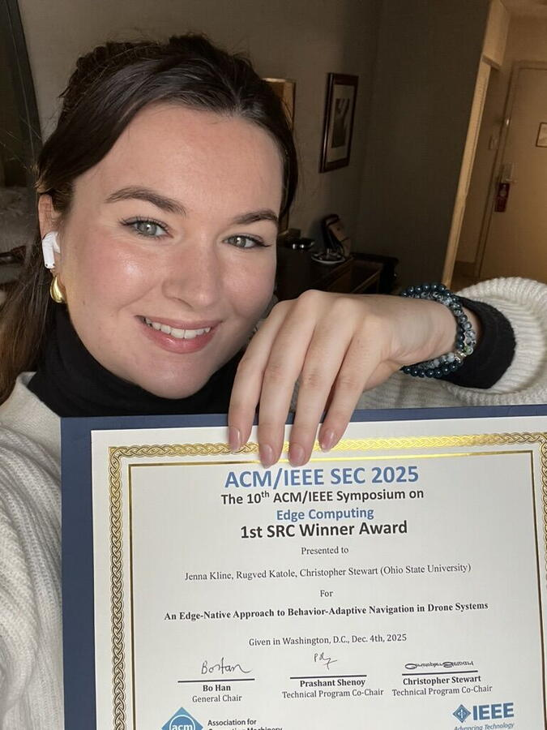

Jenna Kline won first place in the ACM/IEEE Symposium on Edge Computing (SEC 2025) Student Research Competition last week in Washington, D.C., for her project, “An Edge-Native Approach to Behavior-Adaptive Navigation in Drone Systems.”
Kline, a Ph.D. candidate in The Ohio State University's Department of Computer Science and Engineering (CSE), presented a real-time, on-board method that helps drones adjust flight paths based on animal behavior, improving data quality while reducing wildlife disturbance. The work advances field-ready AI for conservation and aligns with the missions of the Imageomics Institute and the AI and Biodiversity Change Global Center to build ethical, scalable tools for environmental monitoring.
The project is joint work with Rugved Katole and Christopher Stewart and is supported by the National Science Foundation's ICICLE AI Institute and The Ohio State University.
Kline said next steps include expanded field tests and open resources to help researchers deploy welfare-aware, edge-AI systems in the wild.